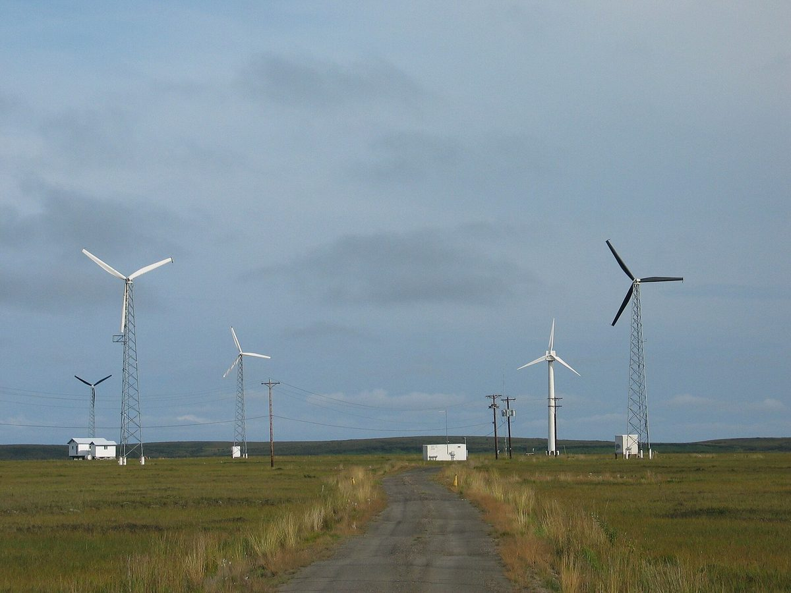

미국 연방 지원 끊기자 원주민 공동체 에너지 사업 멈춰…알래스카 코츠뷰 풍력 2,000만 달러 취소 뒤 1년 넘게 제자리

전력 75%를 디젤로 만들고 소득 20%를 연료에 써…브루킹스 "정부효율부가 원주민 지원 4억6,800만 달러 없애", 의회에 지원 취소 막는 법 요구
미국 연방정부가 원주민 공동체 지원금을 잇달아 거둬들이면서, 디젤 의존을 줄이려던 알래스카 원주민 마을의 풍력 사업이 1년 넘게 멈춰 섰다. 북극권 바로 위 자갈 곶에 자리한 코츠뷰(Kotzebue)는 하늘길과 뱃길로만 닿고 얼음 탓에 바지선이 들어오는 석 달 사이에 한 해 쓸 디젤을 모두 들여와야 하는데, 전력의 75%를 디젤로 만들고 주민은 소득의 약 20%를 연료에 써 미국 저소득 가구 평균 에너지 부담의 세 배가 넘는다. 환경보호청(EPA)은 2024년 알래스카 원주민 기반시설 배정액 1억5,000만 달러 가운데 2,000만 달러를 이 마을 풍력 사업에 주기로 했지만 트럼프 행정부가 2025년 5월 취소했고, 마을 정부 '코츠뷰 원주민 마을(Native Village of Kotzebue)'의 채드 노들럼 에너지 사업 담당은 디젤 의존을 40~50%로 낮출 사업이었다며 "디젤값은 어쩔 수 없어도 우리 에너지는 우리가 만들 수 있다"고 말했다. 브루킹스연구소 연구진은 새 보고서 두 편에서 정부효율부(DOGE)가 원주민 사회 지원 4억6,800만 달러를 없앴고 그 절반가량이 환경·자연자원 분야였다고 분석했으며, 바이든 정부 때 7억 달러를 넘던 원주민 기후·에너지·기반시설 지원 가운데 호피족 600가구 태양광 설치용 2,500만 달러도 70억 달러 규모 'Solar for All' 프로그램 전체와 함께 끊겼다고 짚었다. 연구진은 의회가 원주민 대상 보조금·계약 취소를 막는 법을 만들고 돈이 재무부 상환 방식이 아니라 부족에게 바로 가게 하라고 요구했으며, 백악관과 환경보호청의 입장은 확인되지 않았다. 코츠뷰 마을은 풍력 자금이 다시 풀리기를 기다리며 더 작은 태양광 사업을 추진하고 있다.
시민에너지 관점
같은 알래스카에서도 주 정부는 주법으로 재생에너지 기금을 두고 디젤에 기대는 외딴 마을의 풍력·수력 같은 사업을 지원해 왔는데, 연방 지원이 끊긴 코츠뷰의 사정은 이런 제도적 뒷받침이 얼마나 중요한지를 거꾸로 보여 준다. 공동체 에너지는 지원이 법으로 오래 묶일 때 뿌리를 내리고, 해마다 바뀌는 보조금에 기대면 정권이 바뀌는 순간 코츠뷰처럼 멈춘다. 정부 지원에 기대는 공동체 사업은 원래 불안하지 않느냐는 걱정이 나올 수 있지만, 그럴수록 지원을 법률과 장기 융자로 고정하고 수익이 공동체에 남는 소유 구조를 만들어 스스로 버틸 힘을 키워야 한다. 바깥 연료값에 묶인 섬과 농어촌이 많은 우리도 주민 소유 재생에너지 지원을 법에 못 박아 정부가 바뀌어도 사업이 이어지게 해야 한다.
출처: Grist 2026-11-02 조지프 리(Joseph Lee) 원문 보기
米連邦政府の支援打ち切りで先住民コミュニティのエネルギー事業が停止…アラスカ・コッツビューの風力2,000万ドル取り消し後1年以上足踏み
電力の75%をディーゼルで賄い所得の20%を燃料に…ブルッキングス「政府効率化省が先住民支援4億6,800万ドルを削減」、議会に支援取り消しを防ぐ法律を求める
米連邦政府が先住民コミュニティへの支援金を相次いで引き揚げたことで、ディーゼル依存を減らそうとしていたアラスカの先住民の村の風力事業が1年以上止まっている。北極圏のすぐ北の砂利の岬にあるコッツビュー（Kotzebue）は空路と海路でしか行けず、氷のためにはしけが入れる3カ月の間に1年分のディーゼルをすべて運び込まなければならないが、電力の75%をディーゼルでつくり、住民は所得の約20%を燃料に費やしており、これは米国の低所得世帯の平均エネルギー負担の3倍を超える。環境保護庁（EPA）は2024年、アラスカ先住民のインフラ向け配分1億5,000万ドルのうち2,000万ドルをこの村の風力事業に出すことを決めたが、トランプ政権が2025年5月に取り消し、村の政府「コッツビュー先住民村（Native Village of Kotzebue）」のチャド・ノードラム・エネルギー事業担当は、ディーゼル依存を40〜50%に下げる事業だったとし、「ディーゼル価格はどうにもできなくても、自分たちのエネルギーは自分たちでつくれる」と語った。ブルッキングス研究所の研究陣は新たな報告書2本で、政府効率化省（DOGE）が先住民社会への支援4億6,800万ドルを削減し、その約半分が環境・天然資源分野だったと分析し、バイデン政権下で7億ドルを超えた先住民の気候・エネルギー・インフラ支援のうち、ホピ族600世帯の太陽光設置向け2,500万ドルも、70億ドル規模の「Solar for All」プログラム全体とともに打ち切られたと指摘した。研究陣は、議会が先住民向けの補助金・契約の取り消しを防ぐ法律をつくり、資金が財務省への償還請求方式ではなく部族に直接届くようにすべきだと求めたが、ホワイトハウスとEPAの立場は確認されていない。コッツビューの村は風力の資金が再び動くのを待ちながら、より小さな太陽光事業を進めている。
市民エネルギーの視点
同じアラスカでも州政府は州法で再生可能エネルギー基金を設け、ディーゼルに頼る遠隔地の村の風力や水力などの事業を支援してきたが、連邦の支援が途絶えたコッツビューの状況は、こうした制度的な裏付けがいかに重要かを逆に示している。コミュニティエネルギーは支援が法律で長く固定されてこそ根を張り、毎年変わる補助金に頼れば、政権が代わった瞬間にコッツビューのように止まってしまう。政府の支援に頼るコミュニティ事業はもともと不安定ではないかという懸念もありうるが、だからこそ支援を法律と長期融資で固め、収益がコミュニティに残る所有構造をつくって自ら持ちこたえる力を育てるべきだ。外部の燃料価格に縛られた島や農漁村が多い韓国も、住民所有の再生可能エネルギーへの支援を法律に明記し、政権が代わっても事業が続くようにしなければならない。
出典: Grist（グリスト） 2026-11-02 ジョセフ・リー（Joseph Lee） 原文を読む
美国联邦资助中断致原住民社区能源项目停摆…阿拉斯加科策布风电2,000万美元被取消后停滞一年多
75%电力依赖柴油、居民收入的20%花在燃料上…布鲁金斯称"政府效率部削减原住民资助4.68亿美元"，呼吁国会立法禁止取消资助
随着美国联邦政府接连收回对原住民社区的资助，阿拉斯加一个原住民村庄原本希望减少柴油依赖的风电项目已停滞一年多。位于北极圈以北不远处一处砾石岬角上的科策布（Kotzebue）只能通过空运和海运抵达，由于冰封，全年所需柴油必须在驳船能够进港的三个月内全部运入；当地75%的电力来自柴油，居民约20%的收入花在燃料上，是美国低收入家庭平均能源负担的三倍多。美国环境保护署（EPA）2024年决定从分配给阿拉斯加原住民基础设施的1.5亿美元中拨出2,000万美元支持该村风电项目，但特朗普政府于2025年5月取消了这笔资助；村政府"科策布原住民村（Native Village of Kotzebue）"能源项目负责人查德·诺德勒姆说，该项目本可把柴油依赖降至40%至50%，"柴油价格我们无能为力，但我们可以自己生产能源"。布鲁金斯学会研究人员在两份新报告中分析，政府效率部（DOGE）削减了4.68亿美元原住民社区资助，其中约一半属于环境和自然资源领域；拜登政府时期超过7亿美元的原住民气候、能源和基础设施资助中，用于为霍皮族600户安装光伏的2,500万美元，也随规模70亿美元的"Solar for All"计划整体被取消。研究人员呼吁国会立法禁止取消面向原住民的补助和合同，并让资金直接拨给部落，而不是采用向财政部申请报销的方式；白宫和环境保护署的立场未能得到确认。科策布村一边等待风电资金重新启动，一边推进规模更小的光伏项目。
市民能源视角
同在阿拉斯加，州政府依据州法设立了可再生能源基金，一直支持依赖柴油的偏远村庄发展风电、水电等项目；而失去联邦资助的科策布的处境，恰恰从反面说明了这种制度保障有多重要。社区能源只有在支持被法律长期固定时才能扎根；若依赖每年变动的补贴，一旦政府更替，就会像科策布一样停摆。有人可能担心依赖政府支持的社区项目本来就不稳定，但正因如此，更应以法律和长期贷款固定支持，并建立收益留在社区的所有权结构，培养自我支撑的能力。受制于外部燃料价格的海岛和农渔村众多的韩国，也应把对居民所有的可再生能源的支持写入法律，使项目在政府更替后仍能延续。
来源: 格里斯特（Grist） 2026-11-02 约瑟夫·李（Joseph Lee） 查看原文
Federal funding cuts stall Native community energy projects in the US, with Kotzebue, Alaska, wind project idle for more than a year after losing $20 million
Diesel supplies 75% of the town's power and residents spend 20% of income on fuel; Brookings researchers say DOGE eliminated $468 million for Indian Country and urge Congress to bar grant cancellations
A wind project meant to cut an Alaska Native community's dependence on diesel has been on hold for more than a year after the US federal government withdrew a series of grants to tribal communities. Kotzebue, on a gravel spit just north of the Arctic Circle, can be reached only by air and sea and must bring in a whole year's diesel during the three months when ice does not block freight barges; it generates 75% of its power from diesel, and residents spend about 20% of their income on fuel, more than three times the average energy burden of low-income households nationwide. In 2024 the Environmental Protection Agency (EPA) awarded $20 million for the community's wind project from a $150 million allocation for tribal infrastructure in Alaska, but the Trump administration cancelled the grant in May 2025; Chad Nordlum, energy project manager for the Native Village of Kotzebue, said the project would have cut diesel reliance to about 40 to 50%, adding that while the community can do nothing about diesel prices, "what we can do is produce our own energy." In two new reports, Brookings Institution researchers found that the Department of Government Efficiency (DOGE) eliminated $468 million for Indigenous communities, about half of it for environment and natural resources, and noted that of the more than $700 million in climate, energy and infrastructure funding for tribes under the Biden administration, a $25 million grant for solar panels on 600 Hopi homes was cut along with the entire $7 billion Solar for All program. The researchers called on Congress to pass legislation barring the cancellation of grants and contracts for tribes and to require that money flow directly to tribes rather than through reimbursement from the Treasury; the positions of the White House and the EPA could not be confirmed. Meanwhile Kotzebue is pursuing a smaller solar project while it waits for the wind funding to move again.
Citizen Energy View
Alaska itself has a state renewable energy fund, set up under state law, that has supported wind, hydro and similar projects in remote diesel-dependent villages, and Kotzebue's plight after losing federal support shows, by contrast, how much such institutional backing matters. Community energy takes root when support is fixed in law for the long term; when it depends on grants that change from year to year, it can stop dead as soon as the government changes, as in Kotzebue. Some may worry that community projects relying on government support are inherently fragile, but that is exactly why support should be anchored in legislation and long-term loans, with ownership structures that keep the returns in the community so it can stand on its own. Korea, with its many islands and farming and fishing villages tied to outside fuel prices, should likewise write support for resident-owned renewable energy into law so that projects continue whichever government is in power.
Source: Grist 2026-11-02 Joseph Lee Read the original